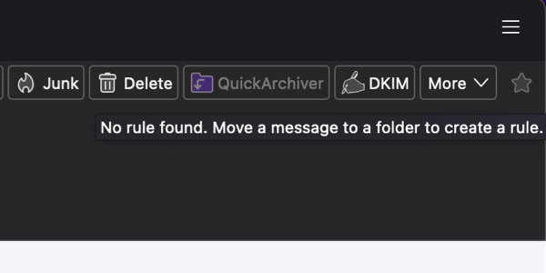
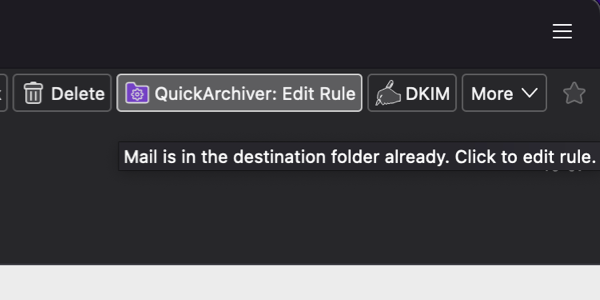
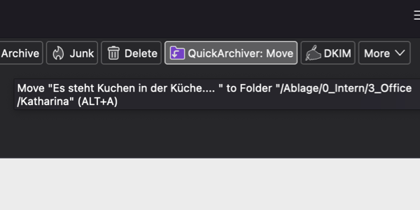
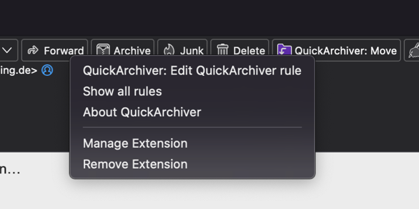
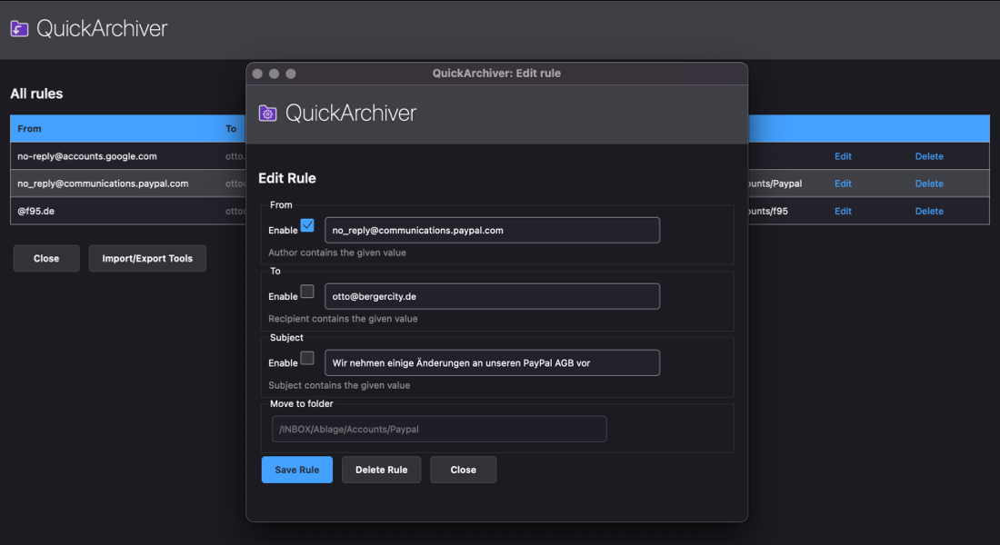
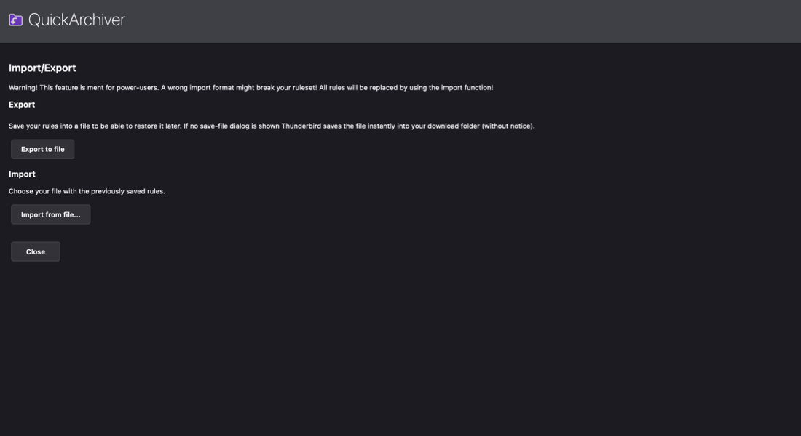

What is QuickArchiver?
QuickArchiver helps you keep your inbox clean. Instead of searching for the right folder and dragging each message there, you can archive it with a single click or keyboard shortcut.
How does QuickArchiver work?

QuickArchiver uses rules to remember the destination folder for a message. Rules can currently match the sender, recipients, or subject.

Create a default rule
When you move a message without a matching rule to a folder for the first time, QuickArchiver automatically creates a rule based on the sender.
Open the rule popup for new rules
If you want to review or adjust new rules immediately, right-click the QuickArchiver button
and enable Open rule popup for new rules
under Options
. The existing rule popup
will then open after the first move of a message without a matching rule.
Disable the option to return to automatic rule creation without opening the popup. The setting is saved permanently.

Archive messages
When another message matches the same sender, QuickArchiver lets you move it to the appropriate folder with a single click.

Context menu
Right-click the QuickArchiver button to open its context menu.
Show the QuickArchiver folder column
The QuickArchiver folder column is available in Thunderbird's table view. To show it, right-click
any column heading in the message list and select QuickArchiver Folder
from the column
picker. You can then move the column to your preferred position.
The column displays the destination folder for matching rules. If the message is already in that
folder, it displays ✓ Current Folder
.
Edit rules
Select Show all rules
from the context menu to view and edit all rules.

Export and import rules
Below the list of rules, you will find a button that opens the import and export tools.
Rules are exported and imported in JSON format.

FAQ
How can I archive all emails of a certain domain into one folder?
The default rule matches the complete sender address. To archive all messages from a domain, such as @amazon.com, edit the rule and remove the characters before the @ sign.
Rules also support wildcards ('*'). For example, '@*example.com' matches messages from info@newsletter.example.com and support@example.com.
Can I archive multiple emails at the same time?
Yes. With the Alt+A shortcut, QuickArchiver moves all selected messages to their respective folders.
Development
QuickArchiver is an open-source project by Otto Berger (quickarchiver@bergercity.de). Supported by www.bergerdata.com.
GitHub project: https://github.com/otto802/quickarchiver
Many thanks to
- developer.thunderbird.net
- thunderbird.topicbox.com/groups/addons
- John Bieling, for his work on the examples
- Philippe Lieser, for the translation logic
- And many others working on the WebExtension API
Release Notes
Version 2.3
Compatibility improvements for newer Thunderbird versions.
- Added the QuickArchiver folder column in the message list's table view
- Improved compatibility with the current WebExtension APIs
- Added an option to open the rule popup when creating new rules
Version 2.2
New features:
- Added a QuickArchiver settings page (see Add-ons Manager → QuickArchiver)
- Rules now support wildcards ('*'). For example, '@*example.com' matches messages from info@newsletter.example.com and support@example.com.
Version 2.1
Warning: With Thunderbird's default settings, stored QuickArchiver rules are lost when the extension is uninstalled. The import and export tools can be used to back up the rules first. In theory, you can transfer the rules to another Thunderbird installation if the account and folder structure is identical (untested).
New features:
- Import and export of all rules in JSON format
- Improved appearance and usability of the rules list
- Fixed initialization on first start
Version 2.0
Thunderbird 115 (Supernova) required substantial changes to QuickArchiver. The old QuickArchiver 0.2 branch no longer works and will not be developed further. Earlier Thunderbird updates had already made it clear that continuing to support it would require significant effort and undesirable compromises.
The good news: there is a new version and you have just installed it!
New features:
- Complete redevelopment based on Mozilla's current WebExtension API, making future updates easier
- Rules are stored in WebExtension storage
- Rules may become available across devices in the future
- New interface with a toolbar button, menu, and keyboard shortcuts
- Improved rule editor and list of all rules
- Rules are still created automatically when messages are moved
Some limitations remain:
- All rules have to be created again. Migrating the old rule database to the new structure would be very time-consuming.
- The QuickArchiver folder column is not available in Thunderbird's card view. In table view, it can be enabled from the column picker. Moving messages can also be done with the toolbar button and keyboard shortcuts.